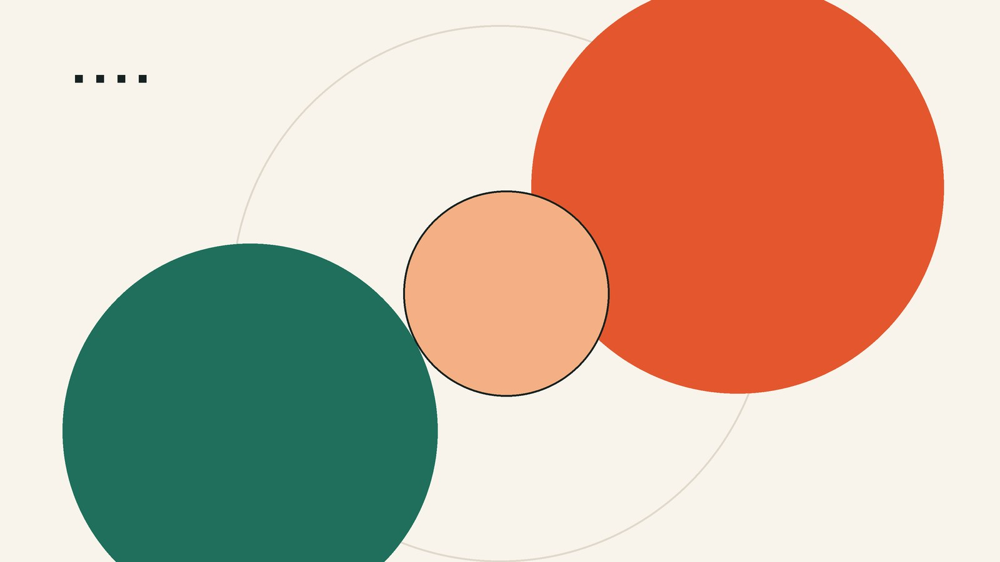

Quotes
Eighteen quotations about design and programming, in a JavaScript array. One of them is picked at random every time the page loads.
Web Technologies · Project 1
This is my learning website: four pages that grew lesson by lesson. A quote collection, a list of project ideas, and a machine whose only purpose is to switch itself off.

Three pages, three different problems.
Eighteen quotations about design and programming, in a JavaScript array. One of them is picked at random every time the page loads.
Six ideas for what I could build next, each with a picture, a note on what it would teach me, and an honest status.
A digital toy: flip the switch, and an arm reaches out to flip it back. Under it, a small game you can actually lose.
No framework, no build step. Four files you can read.
nav.html holds the markup, nav.js fetches it
and puts it on every page. A new link is added once.
style.css uses custom properties for colours and spacing,
so the whole site can change from the top of one file.
A random quote, a moving arm, a countdown. Everything else is plain HTML and CSS — which is also why it still works without scripts.